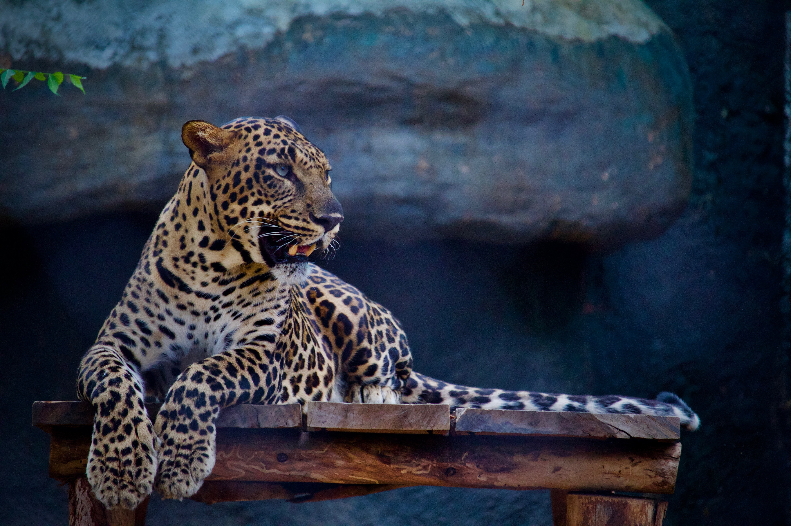
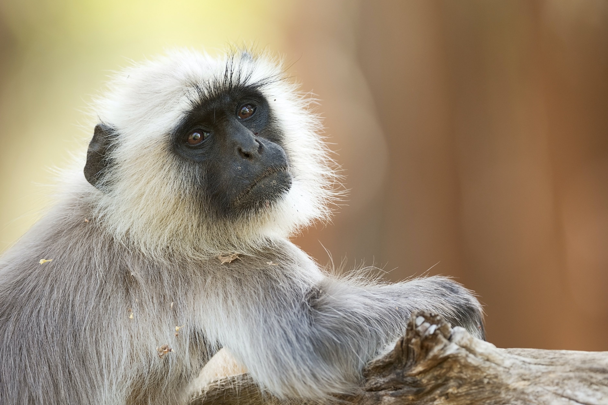
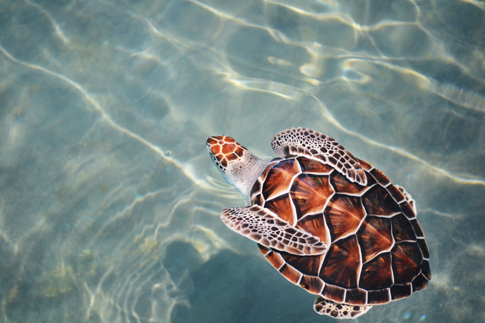

WILDLIFE WONDERLAND
Our virtual adventure delves into Sri Lanka's hidden wildlife gems, where every rustle and splash promises a brush with magic. Imagine scaling misty Horton Plains, spotting "barking deer" amidst emerald meadows, or descending to Bundala's sun-drenched shores, where flamingos paint lagoons pink and elephants meander through grasslands. Inhale the damp air of Sinharaja Forest, a UNESCO haven for shy sloth bears and vibrant hornbills. Venture east to Wasgamuwa, where hundreds of elephants gather, or north to Kaudulla's "gathering," witnessing elusive leopards and graceful sambar deer. This symphony of life whispers beyond the usual roar, waiting to leave you breathless and humbled. Pack your sense of adventure, Sri Lanka's wild whispers await.
Explore More
Sinharaja Forest Reserve
Nestled in Sri Lanka's southwest, the lush Sinharaja Forest Reserve, a UNESCO World Heritage Site, thrives as a biodiversity hotspot. Over 50% of the island's endemic mammals and butterflies flit through the ancient trees, while birds like the Sri Lankan blue whistling thrush serenade the air. From thrilling hikes to serene swims, explore this verdant kingdom and witness the stunning resilience of nature.
Highlights:
Giant Asian Honeybee
Sri Lankan Leopard
Purple-faced Langur

Horton Plains National Park
Image of Horton Plains National Park cloudsOpens in a new window Sri Lanka's Horton Plains National Park, a UNESCO World Heritage Site, is a magical blend of mist-kissed montane grasslands and ancient cloud forests, blanketing a 2,100-meter plateau in the Central Highlands. Hike through vibrant wildflower meadows, feel the spray of Baker's Falls, and stand awestruck at the sheer drop of World's End, a precipice with panoramic valley views. Explore the peaks of Kirigalpoththa and Totapola, the country's second and third highest, spot playful deer and monkeys, and breathe in the crisp air as you're enveloped by the ethereal beauty of this natural wonderland.
Highlights:
Sambar Deer
Sri Lankan Leopard
Purple-faced Langur
Sri Lankan Bush Warbler

Kumana National Park
Nestled in Sri Lanka's southeast, Kumana National Park offers a quieter alternative to its bustling neighbor, Yala. This 357-square-kilometer haven is a paradise for birdwatchers, boasting over 200 species like painted storks, pelicans, and even the elusive black-necked stork, especially in the 200-hectare Kumana Villu swamp during breeding season (May-June). But it's not just a feathered kingdom. Asian elephants, elusive leopards, spotted deer, and even sloth bears roam the land, while crocodiles lurk in lagoons and monkeys swing through the trees. Dry season (April-September) brings wildlife to waterholes, painting the landscape with vibrant life. From avid birdwatchers to wildlife enthusiasts, Kumana promises an unforgettable Sri Lankan adventure.
Highlights:
Asian elephant
Greater Flamingo
Black-necked Stork
Mugger Crocodile

Hikkaduwa Marine National Park
Nestled in vibrant Hikkaduwa, Sri Lanka, lies the enchanting Hikkaduwa Marine National Park. Established in 2002, this underwater haven safeguards a kaleidoscope of life within its shallow fringing reef. Over 170 vibrant fish species, from graceful butterflyfish to regal Moorish idols, dart through colorful coral formations. Turtles and even dugongs glide through the serene waters, inviting snorkelers and divers to join their underwater ballet. This vital park not only offers breathtaking encounters with marine marvels, but also shields the coast with its reef, acting as a natural breakwater against erosion. So, if your soul craves an aquatic adventure, dive into the wonders of Hikkaduwa Marine National Park - where beneath the sun-kissed waves, a vibrant symphony of life awaits.
Highlights:
Hawksbill turtle
Green sea turtle
Spinner dolphin
Moorish idol
WILDLIFE ENCOUNTERS AWAIT
| Wildlife | Interesting Facts | Image |
|---|---|---|
| Sri Lankan Leopard | The world's smallest leopard subspecies, known for its elusive nature and spotted coat. |  |
| Asian Elephant | Gentle giants roaming Sri Lanka's plains and forests, displaying remarkable intelligence and social bonds |  |
| Purple-faced Langur | Endemic monkeys with mesmerizing purple faces and impressive acrobatic skills, swinging through the rainforest canopy. |  |
| Greater Flamingo | Graceful pink waders migrating to Sri Lanka's lagoons, forming spectacular feeding flocks during the dry season. |  |
| Hawksbill turtle | Critically endangered marine turtles with beaks resembling a hawk's, nesting on Sri Lanka's shores. |  |